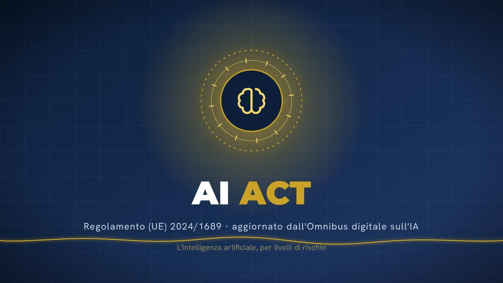

ARG
ARGARGOS › La normativa in 4 minuti › Regolamento sull'IA
Regolamento sull'IA in 4 minuti: Italia: regolamento più legge nazionale
Il regolamento sull'IA, aggiornato dall'Omnibus digitale, ordina l'intelligenza artificiale per livelli di rischio. La classificazione decide tutto. Per finalità, non per tecnologia. L'Italia ha scelto regolamento più legge nazionale.

- 0:00Decisioni invisibili
- 0:14Le sanzioni
- 0:30In Italia
- 0:55AI Act
- 1:08Quattro livelli
- 1:30Alto rischio
- 1:49Date
- 2:11Europa
- 2:27Autorità
- 2:44Cosa fare
Dati chiave
- 35 M€ o il 7 % del fatturato mondiale
- 2.8.2026 applicazione generale e trasparenza
- 2.12.2026 fine del periodo di grazia per la marcatura
- 2.12.2027 alto rischio dell'allegato III
- 2.8.2028 IA nei prodotti regolati (allegato I)
- Legge 132/2025 In vigore da ottobre 2025
- AgID e ACN Autorità designate
- Lavoratori Informati sull'uso dell'IA
Trascrizione
Testo completo della voce narrante
0:00 · Decisioni invisibili
Un algoritmo scarta il tuo curriculum. Un altro decide il tuo credito. Un altro riconosce il tuo volto in aeroporto. Nessuno te l'ha spiegato. D'ora in poi, qualcuno dovrà farlo.
0:14 · Le sanzioni
Il regolamento europeo sull'IA prevede sanzioni fino a trentacinque milioni di euro, o il sette per cento del fatturato mondiale. Da agosto 2026: segnalare l'IA e formare le persone. E l'Italia ha già una legge nazionale.
0:30 · In Italia
L'Italia ha scelto regolamento più legge nazionale. La legge 132 del 2025 è in vigore da ottobre 2025. AgID e ACN sono le autorità, con Banca d'Italia, Consob e Ivass per la finanza. Il lavoratore va informato sull'uso dell'IA. Il professionista deve informare il cliente. E la diffusione illecita di contenuti falsi creati con IA è reato.
0:55 · AI Act
Il regolamento sull'IA, aggiornato dall'Omnibus digitale, ordina l'intelligenza artificiale per livelli di rischio. La classificazione decide tutto. Per finalità, non per tecnologia.
1:08 · Quattro livelli
Quattro livelli. Inaccettabile: vietato, come il punteggio sociale. Alto rischio: lavoro, credito, istruzione, biometria. Trasparenza: segnalare l'IA e marcare i contenuti sintetici. E rischio minimo, la maggior parte degli usi aziendali. Per tutti, l'obbligo di alfabetizzazione sull'IA.
1:30 · Alto rischio
L'alto rischio richiede un sistema di gestione completo. Gestione dei rischi per tutto il ciclo di vita. Dati rappresentativi, senza distorsioni. Documentazione tecnica e registrazione automatica. E supervisione umana, robustezza e cybersicurezza. Articoli da 9 a 15 del regolamento.
1:49 · Date
Le date, dopo l'Omnibus. 2 agosto 2026: applicazione generale e trasparenza. 2 dicembre 2026: fine del periodo di grazia per la marcatura. 2 dicembre 2027: l'alto rischio dell'allegato tre. E 2 agosto 2028: l'IA nei prodotti regolati.
2:11 · Europa
In Europa ogni paese ha il suo ritmo. La Germania ha la sua legge in vigore. L'Italia, anche. La Danimarca è stata la prima. I Paesi Bassi consultano il progetto. La Francia ne discute in Parlamento. E Spagna, Portogallo e Belgio attendono ancora.
2:27 · Autorità
In Italia vigilano l'ACN, per il mercato, e l'AgID, come autorità di notifica. Banca d'Italia, Consob e Ivass seguono la finanza. Il Garante resta competente sui dati personali. E un decreto legislativo del 2026 completa il quadro.
2:44 · Cosa fare
Cosa fare adesso. Censire e classificare i sistemi, garantire la trasparenza, formare e informare i lavoratori. ARGOS lo dimostra: registri, supervisione umana e verdetti tracciabili, con l'IA che gira in locale. Regolamento IA: l'IA propone, la persona decide.
Domande frequenti
Che cos’è Regolamento sull'IA?
Il regolamento sull'IA, aggiornato dall'Omnibus digitale, ordina l'intelligenza artificiale per livelli di rischio. La classificazione decide tutto. Per finalità, non per tecnologia. Il regolamento europeo sull'IA prevede sanzioni fino a trentacinque milioni di euro, o il sette per cento del fatturato mondiale. Da agosto 2026: segnalare l'IA e formare le persone. E l'Italia ha già una legge nazionale.
Che cosa richiede Regolamento sull'IA?
Quattro livelli. Inaccettabile: vietato, come il punteggio sociale. Alto rischio: lavoro, credito, istruzione, biometria. Trasparenza: segnalare l'IA e marcare i contenuti sintetici. E rischio minimo, la maggior parte degli usi aziendali. Per tutti, l'obbligo di alfabetizzazione sull'IA.
Quali sono le date chiave?
Le date, dopo l'Omnibus. 2 agosto 2026: applicazione generale e trasparenza. 2 dicembre 2026: fine del periodo di grazia per la marcatura. 2 dicembre 2027: l'alto rischio dell'allegato tre. E 2 agosto 2028: l'IA nei prodotti regolati.
Qual è la situazione in Italia?
L'Italia ha scelto regolamento più legge nazionale. La legge 132 del 2025 è in vigore da ottobre 2025. AgID e ACN sono le autorità, con Banca d'Italia, Consob e Ivass per la finanza. Il lavoratore va informato sull'uso dell'IA. Il professionista deve informare il cliente. E la diffusione illecita di contenuti falsi creati con IA è reato. In Italia vigilano l'ACN, per il mercato, e l'AgID, come autorità di notifica. Banca d'Italia, Consob e Ivass seguono la finanza. Il Garante resta competente sui dati personali. E un decreto legislativo del 2026 completa il quadro.
Che cosa deve fare un’impresa adesso?
Cosa fare adesso. Censire e classificare i sistemi, garantire la trasparenza, formare e informare i lavoratori. ARGOS lo dimostra: registri, supervisione umana e verdetti tracciabili, con l'IA che gira in locale. Regolamento IA: l'IA propone, la persona decide.
Fonti ufficiali
- Regolamento (UE) 2024/1689 (AI Act) (EUR-Lex)
- Regolamento (UE) 2026/1744 (EUR-Lex)
- Schede normative di Software in a Box
Continua con
 NIS2
NIS2NIS2 in 4 minuti: Italia: legge applicata per fasi
 Data Act e DGA
Data Act e DGAData Act e DGA in 4 minuti: Italia: obbliga, ma manca chi vigila
 Qualificazione ACN e ISO
Qualificazione ACN e ISOQualificazione ACN e ISO in 4 minuti: Una prova non è un modulo
Voce e musica generate con intelligenza artificiale (art. 50 del regolamento sull’IA). Informazione generale, non costituisce consulenza legale; situazione a novembre 2026, secondo le schede normative di Software in a Box. Clip video su licenza Envato.
Per inserire questa presentazione in un altro sito: <iframe src="https://argos.softwareinabox.eu/it/normativa/regolamento-ia/presentacion/?embed=1" width="960" height="540" allow="autoplay; fullscreen" title="Regolamento sull'IA in 4 minuti: Italia: regolamento più legge nazionale"></iframe> con un link a questa pagina.
Disponibile anche in: EspañolDeutschFrançaisFrançais (Belgique)NederlandsNederlands (België)PortuguêsDansk